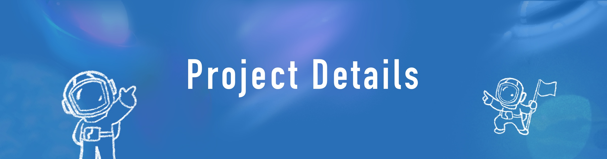
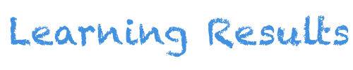
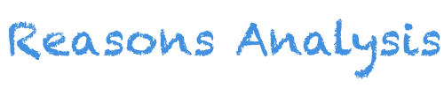
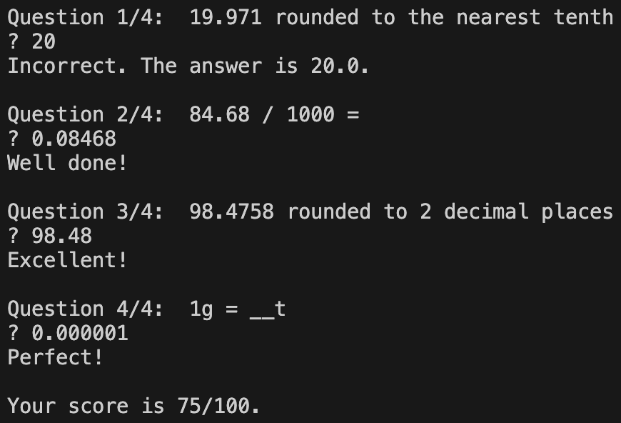

Before starting to learn mathematics, I helped Henry learn Python for two months. After that, the “Learn Elementary School Math with Coding” project officially began.
The content and sequence of our learning are taken from the People's Education Edition Chinese elementary school mathematics textbook. The learning of each unit is divided into the following three steps:
- Textbook: I guide him to study the textbook content, and he does the exercises in the textbook by himself.
- Coding: I design and assign Henry 1-2 coding exercises closely related to the mathematical content of the unit.
- Unit Test: The learning of the unit is deemed complete after Henry scores above 90 out of 100 on a unit test. We have multiple mock tests per unit, so we didn’t have to worry about taking the same test twice.
At the end of a semester, there is a semester test. The learning of a semester is deemed complete when Henry scores above 90 twice in a row. We had multiple mock semester tests to avoid taking the same test twice.

Learned Math Efficiently with Coding
- Henry completed an average of one semester (five months) of courses every two months. He finished the study of mathematics from third to fifth grade in about a year at the age of 6-7.
- Henry maintained scores above 90 on a 100-point scale.
Learned Coding Along the Way
- Henry became proficient in the Python programming language. Through this project, he has learned about built-in data types, functions, classes and objects, randomization, graphical interface programming, threads, exception handling, matplotlib, etc.
- Apart from mathematics, Henry learned how to actively use coding to solve practical problems.
- Henry has also developed the ability to consciously optimize code to reduce the number of computations.

Reasons for Efficiently Learning Math
- Active Engagement: The coding exercises involve solving problems closely related to the mathematical content of the unit. In order to complete the exercises, learners must actively apply the knowledge they learned from the unit, which deepens their understanding. The coding exercises also provide immediate feedback to the learner (wrong code outputs wrong results), which allows them to identify and correct mistakes.
- Visual Learning: Programs can display intermediate processes and final results and sometimes even intuitively showcase mathematical concepts. In the process of writing and running programs, learners can gain a deeper understanding of various knowledge points.
- Ownership: Programs written by oneself are usually more memorable, impactful, and fun to use. For example, some of the programs randomly generate math practice questions. Although the interface may be rudimentary compared to similar apps, children often enjoy using their own programs more. 
Reasons for Efficiently Learning Coding
- Suitable Programs: Since children have limited knowledge and understanding of the world, many coding exercises suitable for adults are not suitable for children. The coding exercises in “Learn Elementary School Math with Coding” are based on content in elementary school textbooks, making them easy to understand for children and applicable to what they are learning.
- Abundant Practice: With a large number of suitable coding exercises, learners can engage in a considerable amount of practice. With sufficient practice, programming skills can be learned step-by-step and consolidated.
In summary, coding and mathematics complement each other - their combination allows learners to efficiently learn mathematics while also becoming proficient in a programming language.
Henry’s relevant learning experience before this project
- Age 4: Started learning Chinese and English.
- Learning Chinese allowed Henry to read mathematics textbooks and do tests.
- Learning English allowed Henry to read simple Python tutorials and documentation online.
- Age 4-5: Played coding games such as Code Karts, Scratch Jr., Box Island, Lightbot, and A.L.E.X.
- Age 5: Learned typing with TypingClub.
- Age 5-6: Engaged in blockly-based Coding with Blockly Games and Scratch.
- Age 5-6: Learned first- and second-grade mathematics.
- Age 6: Learned Python for two months.